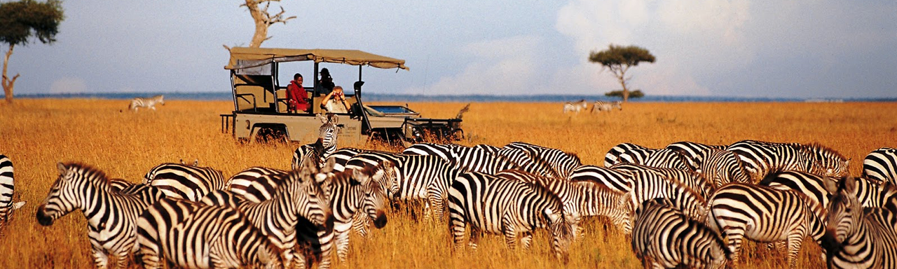
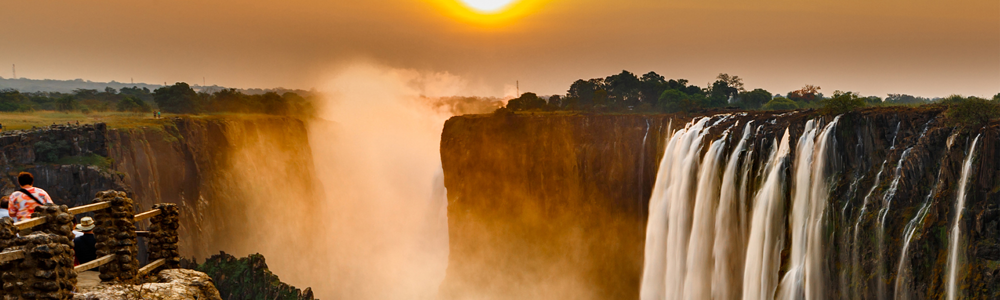

Africa Overview
Africa, the world's second-largest and second-most populous continent, is renowned for its rich diversity in landscapes, cultures, and wildlife. The continent stretches from the Mediterranean Sea in the north to the lush rainforests of Central Africa and the savannas of the south. Africa's varied climate and geography support a wide range of ecosystems, from the Sahara Desert to the tropical forests of the Congo Basin. Its vibrant cultures and history are equally impressive, with ancient civilizations such as Egypt and powerful kingdoms like Mali shaping the continent’s heritage.
Travelers to Africa can experience awe-inspiring natural wonders, including the majestic Victoria Falls and the vast Serengeti Plain. The continent is also home to a variety of unique wildlife, such as lions, elephants, and giraffes, which can be seen in their natural habitats during safaris. Whether you're interested in exploring bustling cities, relaxing on pristine beaches, or embarking on adventurous safaris, Africa offers something for every type of traveler.
Top Destinations in Africa
Serengeti National Park
The Serengeti National Park is renowned for its incredible wildlife and the annual Great Migration, where millions of wildebeest, zebras, and gazelles move across the plains in search of fresh grazing. The park offers some of the best safari experiences in Africa, with opportunities to see the Big Five—lion, leopard, elephant, buffalo, and rhino—in their natural habitat. The expansive landscapes and diverse ecosystems make Serengeti a must-visit destination for nature lovers and adventure seekers alike.
Victoria Falls
Victoria Falls, one of the largest and most famous waterfalls in the world, is located on the Zambezi River between Zambia and Zimbabwe. The falls are renowned for their awe-inspiring size and the thunderous roar of the cascading water. Visitors can enjoy a range of activities including bungee jumping, white-water rafting, and helicopter tours that provide stunning aerial views of the falls. The surrounding area offers beautiful scenery and a range of wildlife experiences.